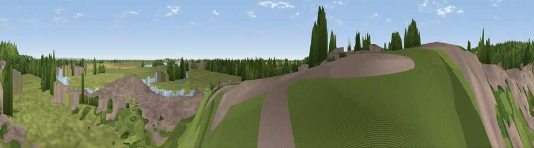

Viewpoint near Rye
#40426 in England · top 55% of its area beats it · near Rye · footpathWhere it is
The exact computed spot (TQ 92280 20274). Click the marker for map links.
Public access: a public right of way passes within 11 m of this spot. Computed from Natural England's CRoW access layer and OpenStreetMap rights of way — not the legal definitive map. Always verify locally.
The view, rendered

A 360° render of this exact spot computed from the terrain model, tree cover and land cover — summer colours, afternoon light, calibrated against photographs of famous viewpoints. Real trees, hedges and buildings will differ in detail.
The panorama
Grey silhouette: terrain skyline in each direction (720 bearings, Earth curvature and refraction included). Dashed green: skyline with trees (+15 m) and buildings (+8 m) as obstacles. Blue strip: how far the ground is visible on each bearing.
Where the view opens
Wedge length = distance to the farthest visible ground on that bearing (vegetation-aware). Rings at 10, 25 and 50 km.
What fills the view
52% grassland · 19% built-up · 13% woodland · 12% water · 3% cropland ·
Angular shares of the visible panorama (visual magnitude), not map area. Landscape diversity 0.57 (0–1 Shannon).
Key numbers
More beautiful places nearby
The staircase of upgrades: each row has a higher view potential than everything closer. Driving times are estimates from straight-line distance, calibrated against real road routing — check an actual route before setting out.
| Place | Direction | Drive | Score |
|---|---|---|---|
| Viewpoint near Playden | N · 1 km | ~3 min | 58.3 |
| Viewpoint near Udimore | WSW · 3 km | ~8 min | 59.7 |
| Viewpoint near Stone in Oxney | NNE · 6 km | ~13 min | 60.1 |
| Viewpoint near Fairlight | SW · 10 km | ~20 min | 75.1 |
| Viewpoint near Fairlight | SSW · 10 km | ~20 min | 78.2 |
| Viewpoint near Fairlight | SW · 11 km | ~21 min | 79.0 |
| Viewpoint near Capel-le-Ferne | ENE · 36 km | ~54 min | 80.2 |
| Viewpoint near Willingdon | WSW · 39 km | ~58 min | 83.4 |
50.94982, 0.73603 · source: osm viewpoint · position refined by local search. Computed location — check access rights before visiting.